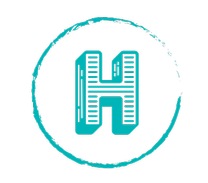

<template>
  <!-- for FF, Chrome, Opera -->
  <!-- <link rel="icon" type="image/png" href="/assets/favicon.png" sizes="16x16" />
  <link rel="icon" type="image/png" href="/assets/favicon.png" sizes="32x32" /> -->

  <!-- for IE -->
  <link rel="icon" type="image/x-icon" href="../myfavicon.ico" />
  <link rel="shortcut icon" type="image/x-icon" href="../myfavicon.ico" />
  <div id="particles-js"></div>
  <div class="main-layout__grid">
    <div class="main-layout__header">
      <a class="main-title" href="/">
        
        
      </a>
    </div>
    <router-view class="main-layout__content"></router-view>
  </div>
</template>
